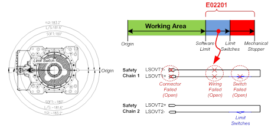
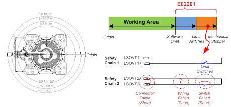

기존 에러코드: E0002 하드웨어 리밋스위치 작동중
1.1.26.1. 개요
로봇의 소프트 리밋 영역을 이탈하였습니다. 그러나 로봇 각 축의 동작영역 끝에 설치한 리밋스위치 입력이 정상적이지 않습니다. 안전체인 1의 입력과 안전체인 2의 입력이 다르므로 점검이 필요합니다.
1.1.26.2. 원인 및 점검방법
|
(1) 하드웨어적 동작영역을 이탈하지 않았을 경우 n 안전체인 1에 문제가 있으므로 리밋스위치 배선을 점검하십시오.
(2) 하드웨어적 동작영역을 이탈하였을 경우 n 안전체인 2에 문제가 있으므로 리밋스위치 배선을 점검하십시오. |
(1) 하드웨어적 동작영역을 이탈하지 않았을 경우

그림 1.121 E02201 본체 리밋SW 입력불일치 (안전체인1 OFF) – 하드웨어 동작영역 내부
안전체인 1에 문제가 있으므로 리밋스위치 배선을 점검하십시오.
하드웨어 리밋스위치가 설치된 영역 안에 있음에도 불구하고 안전체인 1이 OFF된 것으로 모니터링 되고 있습니다. 이것은 다음과 같은 원인에 의해 발생할 수 있습니다.
n 하드웨어 리밋 스위치 고장 : 스위치의 파손이나 어떠한 이유에서 개방(open)됨.
n 배선 : 배선이 끊겼거나 손상을 입어 접촉불량 발생.
n 커넥터 : 커넥터가 빠졌거나 손상을 입어 접촉불량 등의 단선문제 발생.
상세한 점검 포인트는 “하드웨어 리밋 스위치 점검방법” 항을 참조하십시오.
(2) 하드웨어적 동작영역을 이탈하였을 경우

그림 1.122 E02201 본체 리밋SW 입력불일치 (안전체인1 OFF) – 하드웨어 동작영역 외부
안전체인 2에 문제가 있으므로 리밋스위치 배선을 점검하십시오.
하드웨어 리밋스위치가 설치된 영역 밖으로 로봇이 이탈하였음에도 불구하고 안전체인 2는 이상을 감지하지 못하고 있습니다. 즉, 안전체인2가 계속적으로 닫혀진 상태입니다. 이것은 다음과 같은 원인에 의해 발생할 수 있습니다.
n 하드웨어 리밋 스위치 고장 : 스위치의 파손이나 어떠한 이유에서 단락(short)됨.
n 배선 : 한 쌍의 배선에서 두 라인이 단락됨.
n 커넥터 : 커넥터가 손상되어 핀간 단락문제 발생.
상세한 점검 포인트는 “하드웨어 리밋 스위치 점검방법” 항을 참조하십시오.